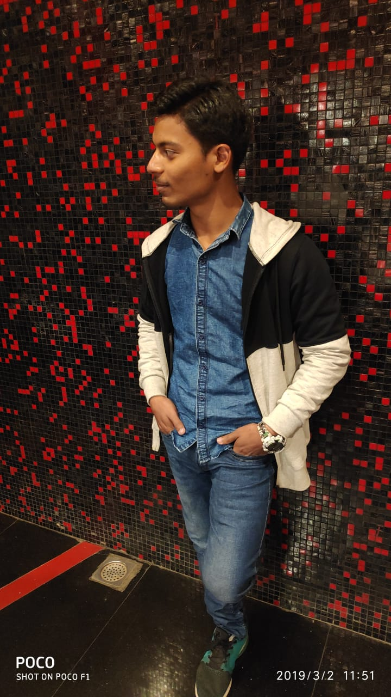

Sahishnu Tiwari
Student(KIET Group of Institutions, Ghaziabad), Team Member of Mood Indigo IIT Bombay
Email: sahishnutiwari@gmail.com
Portfolio
Education
KIET Group of Institutions, Ghaziabad (AKTU University), Uttar Pradesh, India
B.tech in stream of Information Technology, GPA 7.7 (till now)
Sacred Heart School, Mau, Uttar Pradesh
Senior Secondary from Math & Science in 2017 with 63%
High School in 2015 with 10 CGPA
Internships
HR Manager, Social Media Marketing (LUDIFU)
Internship (Hamari Pahchan NGO)
Social Media Marketing (True Side IIT Madrash)
Community Manager Intern (TwoWaits Technologies Pvt. Ltd.)
Volunteer (World Youth Council)
Campus Ambassdor (International MUN)
Internship Certificates: Click here to view the Certificates